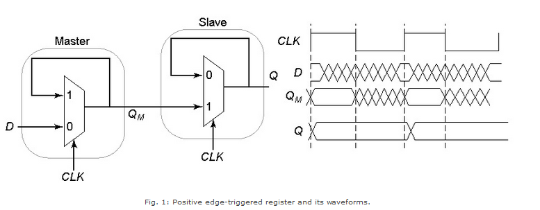

Shakshat Virtual Lab 
INDIAN INSTITUTE OF TECHNOLOGY GUWAHATI
The aim of this experiment is to design and plot the characteristics of a master-slave positive and negative edge triggered registers based on multiplexers.
MUX based Registers
A register consists of cascading a negative latch (master stage) with a positive one (slave stage). Fig. 1 shows a multiplexer-latch based implementation of register. On the low phase of the clock, the master stage is transperent, and the D input is passed to the master stage output, QM. During this period, the slave stage is in the hold mode, keeping its previous value by using feedback. On the rising edge of the clock, the master stage stops sampling the input, and the slave stage starts sampling. During the high phase of the clock, the slave stage samples the output of the master stage (QM), while the master stage remains in a hold mode. Since QM is constant during the high phase of the clock, the output Q makes only one transistion per cycle. The value of Q is the value of D right before the rising edge of the clock, achieving the positive edge-triggered effect.

A negative edge-triggered register can be constructed by using the same principle by simply switching the order of the positive and negative latches (i.e., placing the positive latch first). Fig. 2 shows the transmission gate based implementation of the above register.